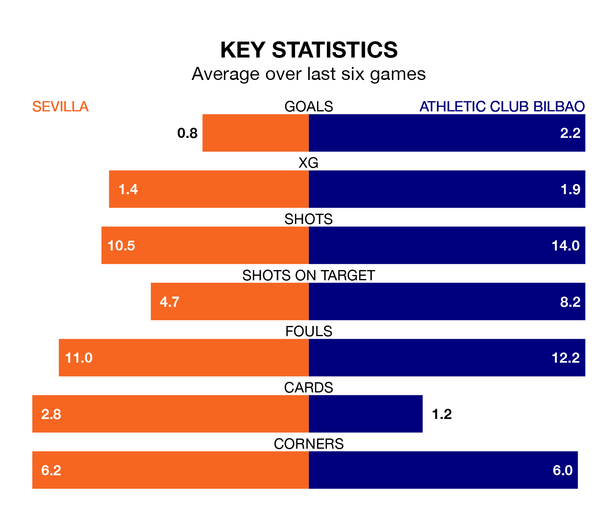

Athletic Club Bilbao face Sevilla on Thursday seeking to protect their formidable unbeaten run in La Liga.
Athletic Club Bilbao are unbeaten in eight, with five wins and three draws, ahead of the 6.15pm kick-off.
They face a Sevilla team who have won one and drawn three over the same number of games.
In Unai Simón, Athletic can rely on one of the league's safest pair of hands. He has kept eight clean sheets in his 18 appearances this season, and no 'keeper has prevented the opposition scoring more often in La Liga.
In Sevilla's net, Marko Dmitrović has two clean sheets in 10 games. He has conceded a goal every 60 minutes, 40% more often than the 85 minutes between goals for Simón Mendibil.
With 34 goals in 18 games so far this season, Athletic Club Bilbao are scoring more than average in the league with 1.9 goals per game. And they are conceding fewer than average, letting in 19 goals at a rate of 1.1 per game.
The home team, meanwhile, are average scorers, with 1.3 goals per game. They have conceded 1.4 goals per game.
In the last 10 years, Sevilla and Athletic have played each other on 23 occasions. Sevilla won 11 of them, Athletic 10, and they drew twice.
On average, Sevilla scored 1.1 goals and Athletic Club Bilbao 1.0 in those matches.
Their last meeting was on April 27, when Sevilla won 1-0 away.
The visitors are fifth in the table after 18 games, of which they have won 10 and drawn five, earning 35 points.
Sevilla are 10 places behind Athletic in 15th, with three wins and seven draws putting them on 16 points.
Sevilla's last match was on December 23, a 1-0 loss against Atlético Madrid.
Athletic beat UD Las Palmas 1-0 last time out, on December 20, with Unai Gómez on the scoresheet.
Thursday's match will be refereed by José María Sánchez Martínez, who has taken charge of nine La Liga games so far this season, issuing three red cards and booking 51 players. He has awarded two penalties.
The last Sevilla game Sánchez Martínez refereed was a 2-1 home loss to Valencia CF on August 11. He is yet to oversee a match featuring Athletic this season.
Updated: 12:57, 02/01/24